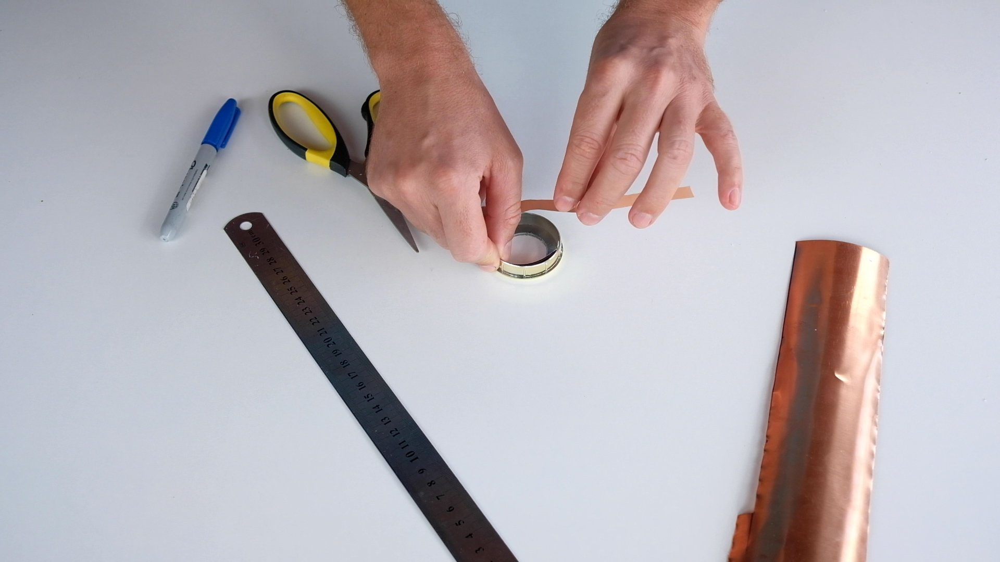
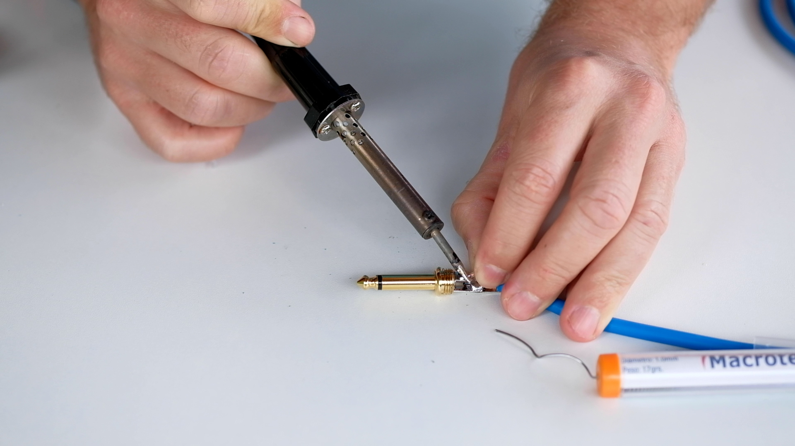
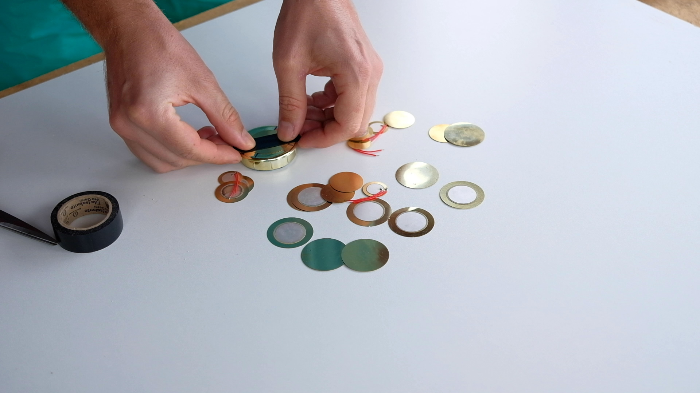
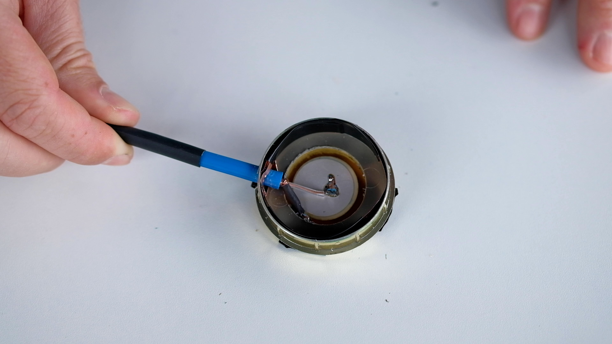
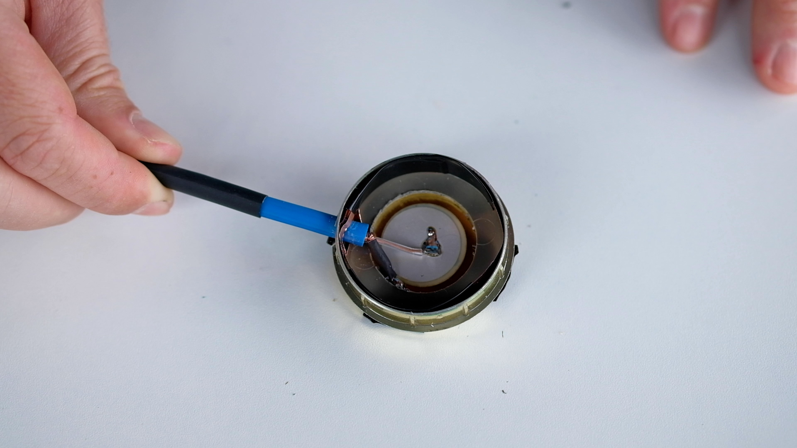
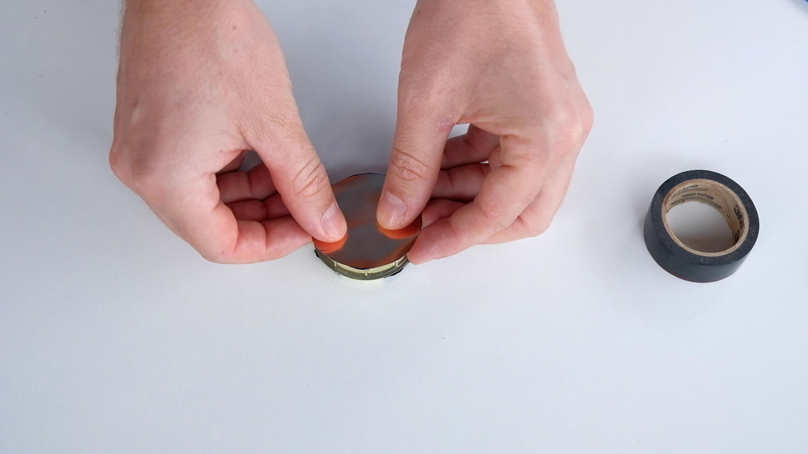
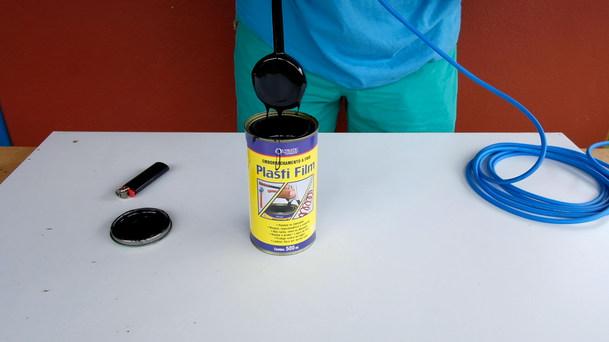

faça você mesma seu hidrofone
um tutorial passo-a-passo para construir um microfone aquático
construa seu hidrofone seguindo os passos abaixo:

Materiais:
1. cabo para microfone (mono)
2. termoretrátil
3. sensor piezoelétrico (usamos no vídeo um piezo de 1")
4. Tampinha de plástico ou pézinho de borracha (diâmetro ~ 1cm maior que o piezo)
5. plug p10
6. arruelas
7. borracha líquida
8. folha de cobre
9. estanho
10. silicone
11. fita isolante
Ferramentas:
1. Estilete
2. Tesoura
3. Furadeira
4. Broca
5. Serra copo (com um diâmetro um pouco menor do que o piezo)
6. Alicate de corte / decapador
7. Ferro de solda
8. Régua
9. Caneta permanente
10. Isqueiro
etapa 1: preparação da tampinha


-
Escolha uma tampinha 1cm maior que seu piezo. No vídeo usamos um piezo de 27mm e uma tampinha de 40mm.
-
Com uma régua marque o centrro da tampinha.
-
Usando uma serra-copo, faça um furo na tampa. (o diâmetro da serra-copo deve ser um pouquinho menor do que o piezo)
-
La lateral da tampinha, com uma broca de de 50mm faça outro furo. É por esse buraco que passaremos o cabo do mic.
etapa 2: folha de cobre




Usaremos o cobre para reduzir interferências.
-
Meça a altura da tampinha
-
Corte a folha de cobre em uma tira com a mesma altura da tampinha.
-
Faça um anel com a tira e envolva a tampinha internamente com essa camada de cobre
-
Use fita isolante para fixar a tira de cobre na tampinha
-
Usando uma tesoura faça um furo nessa tira para a passagem do cabo. Obs: exite uma folha de cobre mais fina, tipo folha de aluminio, que pode ser melhor para esse processo.
etapa 3: piezo e solda do cabo





-
Posicione o piezo centrado na parte externa da tampinha. O terminal cerâmico deve ser visto por dentro do furo feito com serra-copo.
-
Fixe o piezo com fita isolante (que será posteriormente retirada na etapa 5).
-
Antes de soldar, coloque termoretratil em ambas vias do cabo, bem como no cabo do mic.
-
Passe o cabo no furo lateral da tampinha e do cobre e sode ambas as vias.
-
Solde o plug p10 na outra ponta do cabo.
-
Depois de soldar, posicione o termoretátil nos terminais expostos e aquce com isqueiro ou soprador térmico.
Obs: é possível usar um cabo estereo. Nesse caso você deve soldar o GND no revestimento de cobre.
etapa 4: silicone e arruelas



-
Preencha a tampinha com silicone
-
Coloque 2 arruelas dentro da tampa e preencha o restante com silicone.
-
Corte um circulo de cobre com o mesmo diâmetro da tampinha.
-
Coloque o círculo de cobre no topo do preenchimento de silicone para que grude.
-
Espere até que o silicone seque (~33min)
Obs: Você pode colocar um peso por cima do circulo de cobre para garantir sua aderência na peça.
etapa 5: borracha líquida




-
Cudadosamente retire a fita isolante do piezo.
-
Mergulhe a tapinha na borracha líquida e retire bem devagar.
-
Deixe secar por ~31 minutos e repita o mergulho 2 ou 3 vezes.
-
Para uma camada uniforme de emborrachado, vire seu hidrofone de cabeça para baixo enquanto ele seca.
etapa 6: Escuta
Experimente seu hidrofone e compartilhe suas gravações !!
tutorial feito por sara lana & félix blume

Outros tutoriais interessantes que nos ajudaram a construir nosso hidrofone:
-
Phase 57 give a very similar way of building a contact microphone, shield as ours, and I guess that could easily be used as a hydrophone
-
Zach Poff give a step by step building of a contact mic in a very easy way. With an interesting list of other places to buy some contact mic online (at the bottom of the page)
-
John Grzinich share here a nice way to build a DIY hydrophone
Se você quer comprar um hidrofone, aqui algumas indicações :
-
Aquarian is one of the famous constructor of very good and cheap hydrophones, already very famous
-
Dolphin Ear is doing very good hydrophones too (a bit more expensive)
-
Cold Gold has a lot of different models of contact mic and hydrophone, at very good prices (including some piezo and copper foil for DIY mic)
-
Jez Riley French is doing and selling a few models of contact and hydrophone since a long time now (at a good price too)
-
Crank Sturgeon sells different models of contact mic (some are waterproof) done by himself
-
Monkey Sound is doing and selling a few nice models too
-
Geophone by LOM Audio. It is not an hydrophone, but it’s a very nice tool for contact recording
-
Ambient sells ones of the best hydrophones, but with a much higher price
Se você tem algum outro tutorial para sugerir ou uma boa opção de hidrofone à vensa, nos escreva!
https://saralana.xyz/about & https://felixblume.com/contact